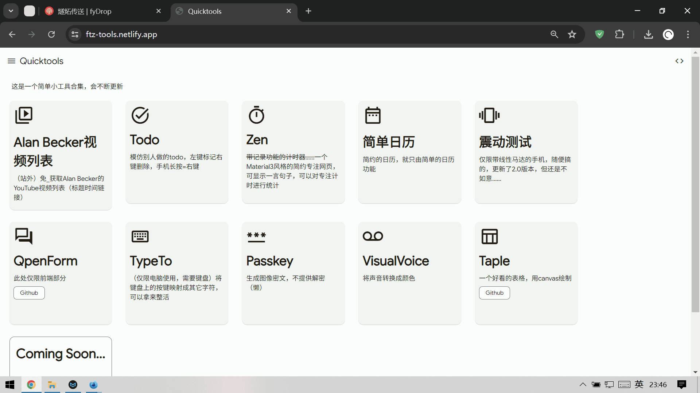
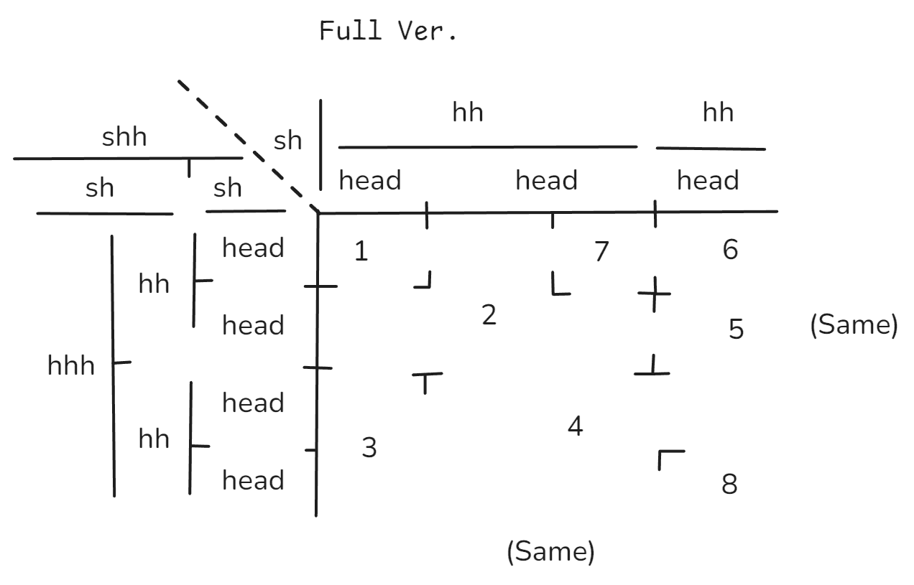

Quicktools第二弹，它来了！
时隔一个学期，又做了一个东西

从TypeTo到Taple
除了Taple都是水
TypeTo
做着玩的，你按一个键屏幕上就会出现对应的字符
没什么的，知识你自己不要把焦点放到清空键然后按空格就行
Passkey
没写css
嘿！这是一种密文
从左到右读取，每一个“字符”是1*3的矩阵，从上到下拼成三个数字，按照编码解密出一个字符，然后连在一起
编码：
| 区域 | 内容 |
|---|---|
| 0开头 | 数字 |
| 1开头 | 字母，100是空格，101到126是小写字母，按顺序来，后面是大写字母 |
| 2开头 | 部分符号，从200开始分别是.,():!? |
数字对应内容：
| 数字 | 图片 |
|---|---|
| 0 | |
| 1 | |
| 2 | |
| 3 | |
| 4 | |
| 5 | |
| 6 | |
| 7 | |
| 8 | |
| 9 |
VisualVoice
没有css，ai写的，最水的一集
把麦克风的声音实时转化为响度、音调、音色，然后对应RGB，设置到背景就行了
Taple
重头戏啊！
这可是我作恶一个学期的项目
而且开了一个单独的Github仓库
操作指南已经写在了README
所以这里还是讲我的开发经历吧
不过，这个做的相对于我的期盼，还是少了
主要是表头方面的欠缺，理想版：

一开始
这个表格的样式是在我上学的时候自己创，目的是简约，一直想做电子版但是一直没有提上日程，excel做太tm麻烦了，后来就有了这个项目了
UI
这次我不用任何组件库，直接自己写css
不过在firefix上显示效果怪怪的，后面可能不会改
渲染部分
最tm难的部分，错的地方不会报错，全是逻辑问题
尤其是那个连体合并单元格，bug改了好久
交互部分
f63a96e这个叫做merge bug fixed删除27行新增19行，把合并时的bug改好了
当时整个合并都是乱的，差不多就是：a指b为父单元格，b又指c是父单元格，c又指d是父单元格，d又指b是父单元格；有时候点了还不能合并；一个回型的单元格，中间还能多出一条分割线……麻了
删除行列时，你会发现所有涉及到的合并单元格全部都会解散，不会像添加行列那样识别
因为这样识别太难了，你怎么知道删除了之后这两部分还是不是连在一起的，在学校无聊的时候想了很久，想要找到怎么才能正确识别，最后还是想不出来，遂放弃
由于我用了ai自动填充（就是copilot那种），基本重复的部分回省事很多，但是……
它说往一个全部存储着JSON的数组里面.push(JSON.parse(JSON.stringify(...)));我一开始还没发现异常，就看到报错，盯着下面的读取JSON发呆……
适配
后来，上线了，但是发现几个问题
一个是点击高亮（手机）
* {
-webkit-tap-highlight-color: transparent;
}
哪个sb的主意要往网页里面默认加点击高亮的
一个是触屏滑动不了（移动模式）
遂加上touchstarttouchendtouchmove事件
由于前面mousemove使用了e.movementXe.movementY搞，简单，但是touch不支持，只能重写
差不多就是这样了
准备肝下一个项目吧